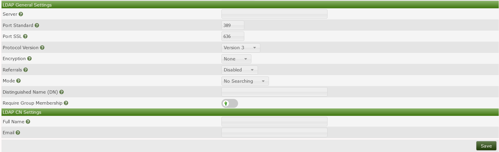

Cacti supports using LDAP authentication to access the Cacti GUI. There are several different ways to use LDAP, which will be described in the following sections.
New authentication settings may not take effect immediately. We recommend to open a new private browser window to test configuration changes.
Before proceeding, please ensure you are familiar with the following terms:
LDAP - A communication language, or protocol. It is a defined structure of how to ask questions of, and receive responses from, a directory. It also defines what questions there exist to be asked, and what responses there exist to be returned. LDAP is not a directory; it is a way to query a directory.
Directory - A database of objects, accompanied with other attributes. Commonly, these objects are user identities, accompanied with passwords. Sometimes, the objects are groups, accompanied by a list of members. Usually the objects are stored in some type of hierarchical structure for organizational and management purposes.
DN - Short for distinguished name, a string that represents a unique object in the directory. There can not be two DNs alike in a directory. In Microsoft's Active Directory, this is a string like 'CN=Joseph,OU=Accounting,OU=Users,DC=corp,DC=example,DC=com'.
Search - A type of LDAP request, in which the client sends some criteria to the server in an attempt to receive back a list of directory objects that meet the search criteria.
Bind - A type of LDAP request, in which the client sends the server a username and a password in an attempt to confirm whether the password is correct for that user.
sAMAccountName - An attribute found in Microsoft's Active Directory directory, and is what we casually know as a username. The sAMAccountName does not uniquely represent an object in the Active Directory, whereas the DN does.

There are three basic routines that Cacti can execute when handling an LDAP authentication.
<username>@example.com
or
domain\<username>
2.Anonymous Searching - In this routine, Cacti connects to LDAP with no authentication and attempts to perform a search for the username, in an attempt to retrieve the specific DN associated with the username. Once the specific DN of the username is found, Cacti binds to LDAP using the DN of the user and the password that was entered during login. Please note, by default, Microsoft's Active Directory does not permit anonymous searches, and will refuse the search request.
3.Specific Searching_- In this routine, Cacti binds to LDAP using a service account that was provided beforehand, then performs a search for the username, in an attempt to retrieve the specific DN associated with the username. Once the specific DN of the username is found, Cacti binds to LDAP using the DN of the user and the password that was entered during login.
None - This is plain-text, normally on port tcp/389. Passwords are transmitted over the network in clear text between Cacti and the directory.
SSL - Commonly known as LDAPS, this is just like LDAP, but encrypted. This normally runs on port tcp/636. Please note, this is not enabled by default for Microsoft's Active Directory because it requires an encryption key and certificate to be installed on the AD controller(s).
TLS - This is plain LDAP, but a START_TLS command is sent by the client to the server to initiate encryption. Normally runs on port tcp/389 and can be entered into during a regular LDAP session.
Please note that some directories will limit the request types to which they respond when there is no encryption on the LDAP communication.
An LDAP Referral is a field returned in an LDAP response message. The referral provides a list of alternate sources from which directory information can be obtained. In the case of a replicated directory such as Microsoft's Active Directory, the referral may contain an LDAP URL which could resolve to any participating LDAP server, whether correctly configured or not.
Cacti can enforce that a user be a member of a specific directory group to be granted access to Cacti. This is useful when your directory contains a mix of users who should and should not be granted access to Cacti. For Cacti to require that the user be apart of a group, Cacti will send a compare request to the directory server asking the server if a specific group has any parameters that contain a specific username. As an example, a compare requests asks the following type of question:
Does there exist a group named CN=cacti-admins,OU=Admin_Groups,OU=Groups,DC=corp,DC=company,DC=com, attached to which there is an attribute named member, where the value of the attribute is CN=Joseph,OU=Admins,DC=example,DC=com?
The following three settings determine the content of the compare request.
2.Group Member Attribute_ - The name of the attribute into which the directory server should search for the user. For example:
3.Group Member Type_ - The format of the text string which should represent the user.
Search Base - The portion of the directory hierarchy inside which the server should perform the search. When the directory contains many objects, the time and resources required to search the directory are greater. The search base setting is useful to reduce the portion of the directory that is searched, thus increasing speed and reducing processor load on the directory server. This setting is also useful if you want to restrict access to Cacti to users who exist in a particular location in the director heierarchy.
Search Filter - The criteria for which the directory server should search. Any parameters that the server is capable of understanding are permitted here. Cacti will perform a substitution for the phrase <username> in the search filter, and will replace it with the username. This field must be in acceptable LDAP syntax. A useful example of a search filter would be:
But more complex filers are also permitted, such as:
(&(sAMAccountName=<username>)(memberOf=CN=cacti-admins,OU=Admin_Groups,OU=Groups
,DC=corp,DC=company,DC=com))3.Search Distinguished Name (DN)_ - The username of the service account with which Cacti will bind to the directory.
4.Search Password_ - The password of the service account with which Cacti will bind to the directory.
Cacti stores many personal preferences and settings into its database that make it easier to use Cacti. For example, the GUI Theme, the Default View Mode, and the User Language are a few of these user settings. These settings are not stored in the LDAP directory, so they are not returned in the LDAP response. Therefore, Cacti will create a local user identity for each LDAP user who logs in. When Cacti creates a local user, it can automatically populate the following two parameters from the LDAP directory. If Cacti sees a local user already exists, it will not attempt to update the user with values from the directory.
Full Name - The LDAP attribute name which contains a user's full name. Some common examples are 'displayname' or 'cn'.
Email - The LDAP attribute name which contains a user's email address. One common example is 'mail'.
Always user lower case. No matter if the directory's attribute name contains uppercase characters (e.g. fullName), the respective field must be filled out in lower-case (fullname).
When using LDAPS, a key and certificate must be installed on the directory server. When the client attaches to the server, it must make a decision to trust or reject the certificate that the server provided. The client will attempt to find the issuer of the certificate in a local repository of trusted certificate signers. If you install onto the directory server a certificate signed by an internal authority or a self-signed certificate, you will need to add the certificate of the issuer to the local repository on the Cacti server. If you do not, the client will surely reject the certificate, causing authentication to fail. To install a trusted certificate into the local repository, consult the documentation for the Operating System platform upon which you installed Cacti.
In Microsoft's Active Directory, LDAP response messages may contain a referral to other directory servers. If you are using LDAPS and have installed a certificate on some LDAP servers and not others, LDAP lookups will fail intermittently because LDAPS negotiations will succeed with some directory servers while failing with other directory servers. If you are experiencing intermittent LDAP failures, ensure that the Cacti server has network access to all directory servers, and that all directory servers are properly configured.
These following scenarios are designed to help you see the different ways to harness the power of LDAP and build a working LDAP configuration in your environment.
In this scenario, a small LDAP directory contains users who are all granted access to Cacti (there are no users denied from Cacti). Some may be administrators, while others are read-only users.
To handle this scenario, start by creating a new local user in Cacti with read-only permissions. Name the user 'MyLdapTemplate'. Next, in Cacti's Authentication settings, set the User Template field to 'MyLdapTemplate'. Set the Mode to 'No Searching'. Set the Distinguished Name (DN) field to <username>@example.com', where 'example.com' is the name of your domain. When any user logs in to Cacti, their password will be checked against the LDAP directory and they'll be granted access to Cacti with read-only access (from the LDAP template user). Once a new user logs in, Cacti will create a local user where the user's Realm is 'LDAP'. You may then optionally promote that user to an administrator by visiting the Users page, locating the account for the LDAP user, and granting additional permissions to that user.
In this scenario, a large LDAP directory contains a mix of users who should, and should not, be granted access to Cacti.
There are two ways to handle this scenario. You may either manually authorize users within Cacti, or you may use a group in the directory to define the authorized users.
To handle this scenario by manually authorizing users within Cacti, navigate to the Authentication settings, and set the User Template field to 'No User'. Set the Mode to 'No Searching'. Set the Distinguished Name (DN) field t <username>@example.com, where 'example.com' is the name of your domain. Next, navigate to the Users page and create a new user where the username matches the username in the directory. Set the user's Realm to 'LDAP'. Grant your desired permissions to the user. When that user logs in to Cacti, their password will be checked against the LDAP directory and they'll be granted access to Cacti based upon their local account.
To handle the large office scenario by using group membership, start by creating a user in the directory that can be used for searching the directory (this is sometimes referred to as a Service Account). Under normal circumstances, this directory user does not need elevated permissions. Next, create a group in the directory that contains all the users who should be granted access to Cacti. Next, in Cacti, create a new local user named 'MyLdapTemplate', with administrator permissions. In Cacti's Authentication settings, set the User Template field to 'MyLdapTemplate'. Set the Mode to 'Specific Searching'. Leave the Distinguished Name (DN) field blank. Set the Require Group Membership field to enabled. Set the Group Distinguished Name (DN) to the name of the group. Set Group Member Attribute to 'member'. Set Group Member Type to 'Distinguished Name'. Set Search Base to the DN of the hierarchical structure in the directory which contains all the users, such as 'OU=Users,DC=example,DC=com'. Set Search Filter to 'sAMAccountName=<username>'. Set Search Distinguished Name (DN) to the username of the service account you created in the directory. Set Search Password to the password for the service account. Optionally, set Full Name to the directory attribute that contains the user's name, such as 'cn', and also set Email to the directory attribute that contains the user's email address, such as 'mail'.
Copyright (c) 2004-2024 The Cacti Group